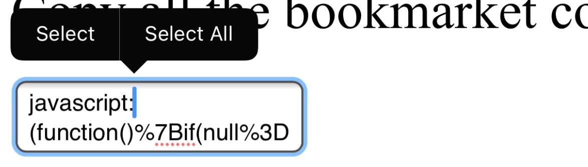
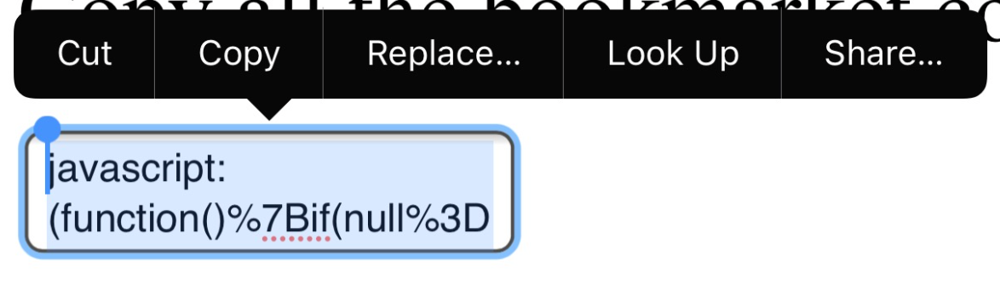
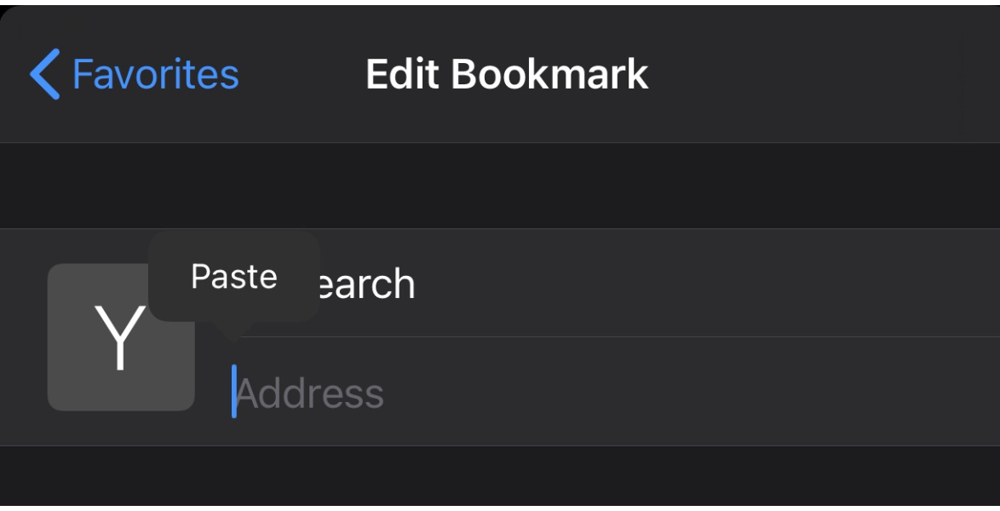
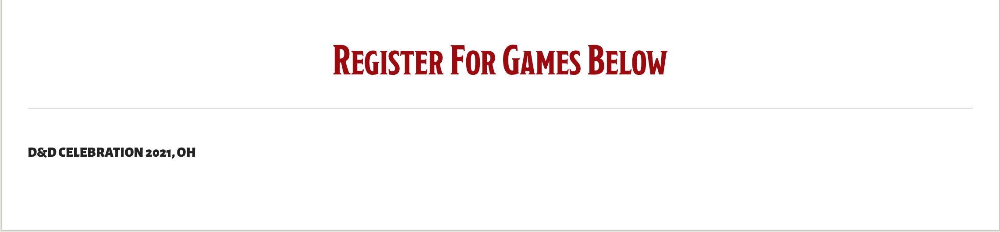
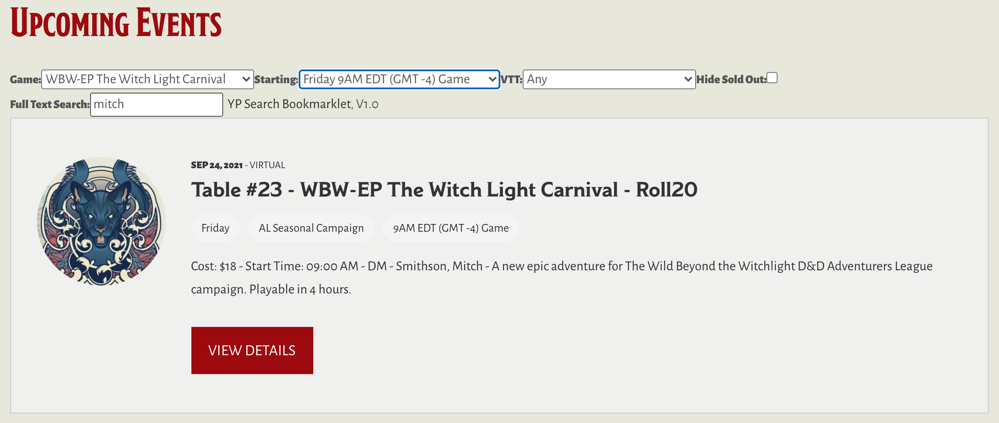

Yawning Portal Search
Description
This adds a search for to a Wizards of the Coast events page. It does not take you to an events page. You must load the events page first, then run this bookmarklet.
Installation
Desktop browsers
- On desktop browsers, drag this link: Yawning Portal Search to your browser's bookmarks toolbar
- That's it
Mobile browsers
Mobile browsers typically do not have a "drag to toolbar" option, so, if yours does not, it is a bit longer of a process. If you are using a Mac and a linked iPhone, you can use the desktop instructions on Desktop Safari, and let them sync over. Otherwise, you need to take some steps to install manually on your mobile device:
- Create a bookmark on your browser. Name it "YP Search". The second line (the URL) can link anywhere, because youa re going to change it
- Copy all the bookmarlet code from inside this textarea
- 
- 
- Edit the bookmark you just created
- Paste what you copied earlier into the second line (the URL)

I do not own an android phone, but the steps are likely similar. If somebody would like to outline those steps, I would be happy to include instructions.
Usage
After it is installed, to use:
- Go to the WoTC's Yawning Portal Page
- Click on one of the links under "Register for Games Below", such as the D&D Celebration link:
 - Wait for the page to load
- Click on the bookmarklet you installed
And see the search form above the list of events:
Happy Searching